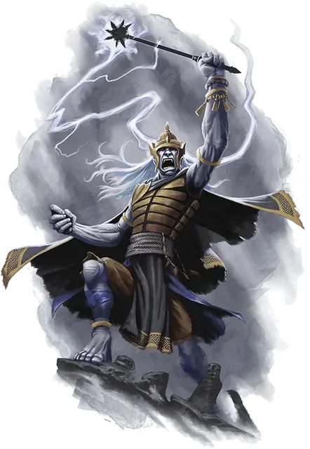

Благоткас
Blagothkus
Огромный Великан (Облачный великан), нейтрально-злой, именной НИП

Класс Доспеха 17 (наборный доспех)
Хиты 138 (12к12 + 60)
Скорость 40 футов
| мод | спас | ||
|---|---|---|---|
| СИЛ | 26 | +8 | +8 |
| ЛОВ | 13 | +1 | +1 |
| ТЕЛ | 20 | +5 | +9 |
| мод | спас | ||
|---|---|---|---|
| ИНТ | 16 | +3 | +3 |
| МДР | 15 | +2 | +6 |
| ХАР | 15 | +2 | +6 |
Навыки Восприятие +6, Запугивание +6, Магия +7, Проницательность +6
Чувства пассивное Восприятие 16
Языки Общий, Великаний, Драконий
Опасность 9 (5000 опыта)
Бонус мастерства +4
Особенности
Острый нюх. . Благоткас получает преимущество на проверки Мудрости (Восприятие) опирающиеся на обоняние.
Врождённое колдовство. . Благоткас может по наитию творить следующие заклинаний (Сл спасброска от заклинания 15) без требования материальных компонентов:
• 3/день: туманное облако [fog cloud], левитация [levitate]
Использование заклинаний. Благоткас является заклинателем 5-го уровня. Его базовой характеристикой является Интеллект (Сл спасброска от заклинания 15, +7 к попаданию атаками заклинаниями). У Благоткаса подготовлены следующие заклинания волшебника:
• Заговоры (по желанию): свет [light], волшебная рука [mage hand], фокусы [prestidigitation]
• 1 уровень (4 ячейки): обнаружение магии [detect magic], опознание [identify], волшебная стрела [magic missile], щит [shield]
• 2 уровень (3 ячейки): порыв ветра [gust of wind], туманный шаг [misty step], дребезги [shatter]
• 3 уровень (2 ячейки): полёт [fly], молния [lightning bolt]
Действия
Мультиатака. Благоткас совершает две атаки моргенштерном.
Моргенштерн. Рукопашная атака оружием: +10 к попаданию, досягаемость 10 футов, одна цель. Попадание: 21 (3к8+8) колющего урона.